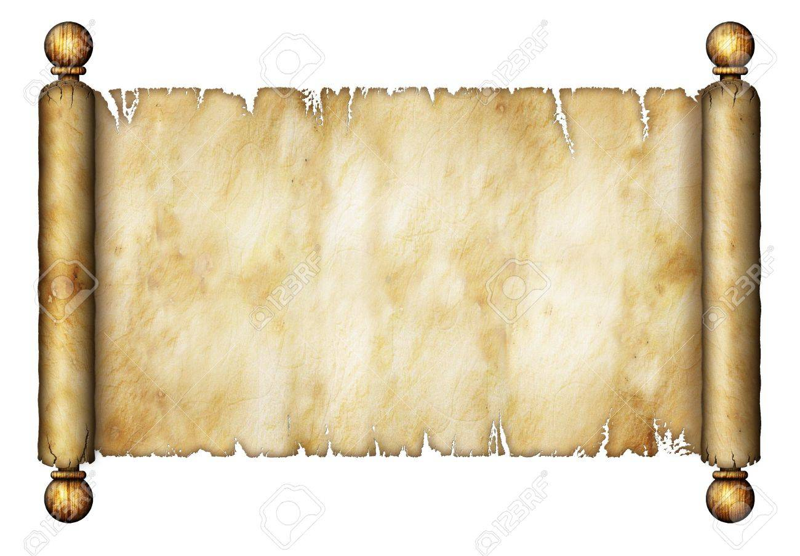

La cosa más difícil es conocernos a nosotros mismos; la más fácil es hablar mal de los demás.
(Tales de Mileto)
Vuelve a la página principal
Aquí puedes encontrar una selección de citas filosóficas identificadas por autor:
La cosa más difícil es conocernos a nosotros mismos; la más fácil es hablar mal de los demás.
(Tales de Mileto)
El conocimiento es poder.
(Francis Bacon)
La peor lucha es la que no se hace.
(Karl Marx)
No lastimes a los demás con lo que te causa dolor a ti mismo.
(Buda)
El corazón tiene razones que la razón ignora.
(Blaise Pascal)
Pocas veces pensamos en lo que tenemos; pero siempre en lo que nos falta.
(Schopenhauer)